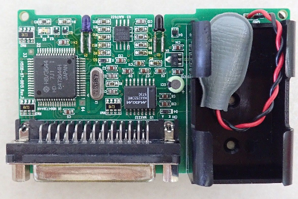

The Missing Link
The original Game Boy was capable of many feats. It could scan barcodes, take digital photos, print out pictures, connect with other units for multiplayer, and even map out fish underwater through sonar. Though many gamers fondly remember the system as a modest, monochromatic device, the Game Boy was constantly pushing boundaries thanks to the efforts of Nintendo and other companies. One of the most groundbreaking developments from this era may seem trivial by today's standards, but back then it was years ahead of its time.
In 1997, Hudson introduced a new type of Game Boy cartridge called the HuC-1. This mapper was very similar to existing ones, however, the HuC-1 had infrared diodes built into the PCB. These allowed the cartridge to send and receive infrared signals. Hudson developed the HuC-1 before the Game Boy Color came out, so the cartridge was the platform's first example of infrared communication. Originally, the HuC-1 enabled 2 Game Boys to exchange data in close proximity. The range of the HuC-1 was incredibly short, usually not more than a couple of centimeters. As a result, the cartridges were often positioned near each other or even touching. Hudson playfully named this feature GBKISS, making fun of how intimate the Game Boys appeared when trading IR signals.
As previous Edge of Emulation articles have demonstrated, infrared communication allowed the Game Boy to interact with many non-Game Boy devices. I've covered TV remotes, incandescent lightbulbs, the Pocket Pikachu 2 GS, the Pocket Sakura, the Full Changer, and even motorized Zoids models. Hudson was the first company to do something like this on the Game Boy, however, when they released the GBKISS LINK in early 1998. This device was an "infrared modem", essentially add-on hardware for a user's PC that allowed their computer to transfer information to and from the HuC-1 via infrared.
The GBKISS LINK was the first commercial example of GB-to-PC communication approved of by Nintendo. Users could take files from the PC, send them through the GBKISS LINK, and have them appear on their Game Boys. More importantly, if the user's PC had internet access, they could pull data from websites and load them onto their Game Boys. Hudson did just that on several occasions, effectively making the first downloadable content not just for the Game Boy, but any handheld gaming system. The GBKISS LINK predates the Mobile Adapter GB and was a contemporary for the Tiger Game.com. Although it would be a stretch to call this "internet gaming", it was a very early attempt at taking the Game Boy online in a limited fashion.
Unfortunately, a lot of details surrounding the GBKISS LINK have been wrapped in mystery for decades. Exact information on the hardware was sparse at best, and no one had thoroughly documented how it worked on a lower, more technical manner. The GBKISS LINK had the distinction of being the only remaining officially licensed peripheral unsupported by any emulator. Not only does it occupy a special place in history that needs to be preserved, it also holds a special meaning for me personally. This is the final part of a journey I embarked on 8 years ago, to see that everything the Game Boy had to offer was playable through emulation. Once the secrets of the GBKISS LINK were revealed, I would have completed my long-term goal...
Lost Signal
As always, one of the first steps in the reverse-engineering process is to acquire the hardware and start probing it. Although only a handful of games used the HuC-1 (and HuC-3 successor), there are still plenty of options available cheaply. Back in 2021, when I was gathering hardware for my book, Peripheral Vision, I purchased a copy of Super B-Daman: Fighting Phoenix. It's a spin-off of the Bomberman franchise and happens to be the first HuC-1 game made. Only certain HuC titles were marked as GBKISS compatible, which means they're capable of sending/receiving specially formatted files over infrared. Some games use the infrared diodes for standard trading or multiplayer, like the Japanese version of Pokemon TCG.
Note the logo to the upper-right. This distinguished whether a HuC-1 or HuC-3 games was GBKISS compatible.
Every HuC cartridge with IR capabilities came in a black cartridge. The very top is actually translucent plastic, so the diodes can let light in and out of the shell. What's interesting to note is that typically black cartridges denote games that are compatible with both the original Game Boy and the upgraded Game Boy Color. Hudson's HuC-1 games actually came out before Nintendo implemented this scheme, so a handful of cartridges break this rule of thumb. Anyway, inside the HuC-1, there are 2 separate diodes used for incoming and outgoing signals. They're spaced pretty far apart, and as such they seem to avoid certain issues the GBC had with receiving its own outgoing signal.
The GBKISS LINK, in contrast to the game cartridges, is damn near mythical to find. My best guess is that it will probably show up for auction maybe twice a decade. The last such one was probably back in September of 2023. Sadly, I was not aware of it when the auction was live! There had been a time where I actively kept an eye out for the GBKISS LINK, but I had since given up when this one was being sold. Although I didn't think it was 100% necessary to have the hardware in my possession in order to emulate it, there was a floppy disk with GBKISS LINK software and data that needed to be archived.
As much as I cursed my luck (or lack thereof), the auction did have some high-resolution photos of the GBKISS LINK, which by itself was incredible. Images of the device are hard to come by; most are old, tiny, and heavily compressed. Additionally, the photos included a single 2-sided piece of paper that served as a brief quick-start guide. It was clear enough to grab the text and translate, offering more insights into how the GBKISS LINK operated. The hardware was very bare; it's just an exposed PCB that connected to PCs via the serial port. A 9V battery acted as the power source. There was no ON/OFF switch, so it appears it was turned on constantly until the battery was removed. Hudson included a clear plastic pouch that wrapped around the GBKISS LINK to prevent dust and dirt from building up.

As far as I could tell from various sources, the floppy disk contained Word documents for 2 manuals, a readme text file, a Windows 95 executable for handling IR transfers, and a number of "GBF" files representing various software that could be sent to GBKISS compatible games. Most of these were simple minigames but there were utilities like a calculator and a stopwatch. I wasn't the first person to go poking around the GBKISS LINK. Way back in 1998, about a month after Hudson launched the modem, a fellow under the name "Takeshi" bought one and started experimenting with how it worked. They left behind a short log of their activities. It's not clear how far along they got, but I was determined to help finish what they started.
At first glance, it appeared as if all of the content on the floppy disk would be forever lost. Thankfully, that was far from the case. Before Hudson released the GBKISS LINK, they also made a title called GBKiss Mini Games. This wasn't so much a game as it was largely a demonstration of the GBKISS technology. The cartridge boots up immediately to the GBKISS Menu, where users can send and receive data over infrared. At the time, it was only compatible with Super B-Daman, but Hudson had larger plans. GBKiss Mini Games was intended to work with the GBKISS LINK as well as being used for promotional purposes at various stores. The idea was that kids could come to participating locations and download minigames via GBKISS.
GBKiss Mini Games was heavily focused on downloading and transferring files.
GBKiss Mini Games, however, actually has most of these minigames already stored in its cartridge ROM. The first clue about this is that fact that a random game is already unlocked when booting up the cartridge for the first time. Which minigame exactly seemed to depend on what the user chose as their name when registering their info. Sure enough, when opening the ROM in a hex editor, there were strings that roughly matched some of the GBF files Takeshi-san had mentioned. What's more, it seemed these minigames could be accessed via passwords. I stumbled upon a bunch of mostly unpublished Game Boy cheat codes from someone named CaH4e3 (pronounced Sanchez). Sure enough, different passwords unlocked different minigames.
This was probably done so that store owners could easily select which minigames they wanted to send while preventing kids from unlocking everything on their own (and thus negating the promotion). However, it turned out to be absolutely critical to preserving the GBKISS LINK. Not only were most of the minigames now recoverable, but they could also be studied further to figure out how the GBKISS feature transferred files. Unfortunately, just one game was missing, Mini Stasol, but the rest were intact. In theory, a lot of information could have been gathered simply by recording any communication while sending minigames from one Game Boy to another. The first step towards emulating the GBKISS LINK would be to recreate the normal GBKISS functionality.
External Connections
Although I had briefly dabbled with some emulation of the HuC-1's infrared diodes, I'd set aside most of my work in favor of tackling other things. I figured I'd leave the GBKISS LINK for last since the hardware proved so elusive. In the meantime, I found myself busy with stuff like the Advance Movie Adapter, the Play-Yan models, the Glucoboy, the Campho Advance, and others. Right around the time I was getting close to finishing up my TODO list of GBA peripherals, I posted The State of Emulation, giving an overview of what kind of Game Boy hardware could be emulated. Another researcher and developer saw the article and reached out to me about Hudson's GBKISS.
sfiera was in the process of reverse-engineering and documenting just about everything you'd ever want to know about GBKISS and the GBKISS LINK. A massive amount of data and notes was being compiled at GBKiss.org. Perhaps most significantly, sfiera had already determined the file format of those GBF files Takeshi-san's log had mentioned. Thanks to that, every piece of software could be extracted from the GBKiss Mini Games ROM. sfiera had come up with a method of injecting GBF files directly into the SRAM of a HuC cartridge, so all of the GBF files were verified to work on real hardware. What's more is that sfiera had even made GBKISS compatible homebrew!
I was quite frankly blown away by how much progress seemingly appeared out of nowhere. This was just the sort of detailed information I needed to start emulating normal GBKISS communication and eventually the GBKISS LINK itself. sfiera's work basically supercharged my own efforts, allowing me to implement everything within weeks once I was finished dealing with GBA stuff. I was still going to have to dive deep into whatever infrared protocol was used during GBKISS and GBKISS LINK transfers, so to begin I needed to establish some sort of infrared netplay for HuC-1 cartridges.
The HuC-1 isn't a very complex mapper. It's very much like the MBC1 except it can temporarily disable SRAM. The area of memory typically dedicated to save data will instead act as infrared I/O. There's only 1 hardware register used for infrared. To turn the IR light on or off, the Game Boy's CPU simply writes a 0x01 or a 0x00, respectively. When reading from this register, the values 0xC1 and 0xC0 determine whether the transceiver is detecting IR light or not. This straightforward operation is quite easy to emulate, with GBE+ merely turning a signal on or off via networking when appropriate.
One problem with many infrared transfers, however, is that they're generally very, very sensitive to timing. Too many or too little cycles here and there are enough to throw many games off. For the most part, two emulators connecting to simulate infrared communications need to enforce strict synchronicity. Player 1 can't run faster than Player 2, otherwise the protocol tends to break down. This is not necessarily true of every type of infrared transfer, but many older handhelds and games need to run in lock-step. When I made the Pokemon Mini core, this lock-step behavior was done almost instruction-by-instruction, with both sides keeping track of how far ahead the other was and running additional instructions in case they needed to catch up.
This design was far more sophisticated than the way I programmed lock-step behavior for the GBC core. Here, each emulated Game Boy tries to run roughly for a fixed amount of cycles before both sides sync up. Sometimes one side will exceed the maximum number of cycles a bit, but that deficit is not tracked or accounted for later. Over time, this can cause desyncs and errors. It works well enough because the threshold for syncing is adjustable. Depending on the game, certain threshold values will work better than others. It's a compromise for the time being, just until the GBC core can mimic lock-step just like the Pokemon Mini core.
Anyway, HuC-1 infrared transfers in GBE+ inherited the GBC lock-step behavior as well. At first I wasn't sure if it was going to work at all. I tried sending a minigame from one Game Boy to another via GBKISS using different sync thresholds of 4, 16, 32, 64, 128, and 256. None of these values were successful, but some seemed to do better than others. When I looked at the individual IR pulses, the handshake portion where each Game Boy establishes an initial connection appeared to do best at 32 or 64 cycles. I wondered if some value in between that would do the trick. Little by little, I started experimenting until, to my delight, it just worked! As it turns out, the magic number is 40 cycles. For whatever reason, this sync threshold works every time for every transfer, no matter what.
The 3 stages of a GBKISS transfer. 1) Wait to start. 2) Establish connection and begin sending file. 3) Finish and close session.
GBE+ could handle 2-player infrared communication, however, Hudson had a few games that could technically support more players than that via GBKISS. Chousoku Spinner, a competitive yo-yo game, offered 10-player battles for things like who could spin the longest. There was also a GBKISS minigame called Bakechu Relay where a maximum of 16 people had to pass a ball through a moving hole. Initially, supporting that many players seems quite daunting, however, I'd already dealt with something similar when emulating the Pokemon Mini's infrared games, which also supported 10-player matches in some cases.
The idea is to have each instance of the emulator setup their own Player ID, such that one emulator acts as Player 1, and another acts as Player 2, so on and so forth. Each emulator has to agree on a base TCP port they will use for communications, such as 2000. Depending on the the player, an offset to the base port is added, and then that port is assigned for all communications for that player. For example, Player 3 is assigned the TCP port 2002, and Player 7 is assigned the TCP port 2006, and Player 1 is assigned the original base port itself.
By pressing a special hotkey, the emulator can switch the which port it wants to communicate with dynamically. When Player 1 wants to talk to Player 2, both sides will need to switch the port they want to target. Then the process repeats when Player 2 wants to exchange information with Player 3. Helpfully, an on-screen display message appears in GBE+ telling users which player they're trying to talk to. It is a bit cumbersome, but it gets the job done. The neat thing about this method is that it's easily expandable to accommodate larger groups than 16-players. Perhaps thankfully enough, Hudson never made software that exceeded that many people.
Through an elaborate exchange of infrared signals, up to 10 players can battle in short tournaments in Chousoku Spinner.
One important improvement I also borrowed from GBE+'s Pokemon Mini core was making lock-step only activate when an infrared transfer was in progress. Previously, with the GBC core, lock-step was enabled as soon as the emulator manually established a remote connection with another player. This was a bit overkill, as lockstep can be painfully slow, chugging down anywhere from 10-40 FPS depending on the game and how much syncing is happening per-second. Even trying to navigate menus would be quite a chore. For the GBKISS, the lock-step only triggers when one side sends an infrared signal. Once no infrared activity has been detected for at least 1 full second, lock-step is deactivated. This ensures minimal slowdown. When slowdowns do occur, they're often on the static screens shown during the transfer, so it's hardly noticeable. This approach to lock-step infrared communications was so effective that I backported it to the way GBE+ handles things for the GBC.
Digressing, with all that taken care of, GBE+ could now emulate standard GBKISS transfers. It could send data from one virtual Game Boy to another. This was the easy part, however. The ultimate goal was to have the user select any GBF file from their computer, then emulate the necessary infrared signals so that the file was transferred as if it had come from the GBKISS LINK. This is a quite leap in difficulty. To accomplish that, I would have to reverse-engineer the infrared protocol itself and then find a way to simulate those IR pulses with exact timings.
sfiera had already documented some of the infrared protocol at time, such as a few known commands, the handshake, and the general structure of transfers between sender and receiver. It was incredibly helpful to kickstart my own research. The first step I took was to record a complete GBKISS transfer, capturing each ON and OFF pulse for both sides when sending a minigame. The log kept track of how long each pulse was in terms of CPU cycles for the Game Boy. Using sfiera's notes, I eventually pieced together how different lengths of ON-OFF pulses formed individual bits and bytes. To make things easier, I made a utility that grabbed the logs, processed the length of each pulse, and rewrote the file as complete bytes. Using this, I could now investigate the protocol thoroughly.
Keep It Simple
When initiating a transfer, the side sending data will issue 2 separate bytes, 0xAA and 0xC3. The sender will wait for responses for each byte. The receiver has to send 0x55 and 0x3C. This is known as the handshake; it serves to inform both participants when a data transfer is ready. The GBKISS protocol has many such transfers. It's actually incredibly detailed, so for the sake of brevity, many details will be glossed over here. A full accounting of the protocol can be found on Dan Docs.. The chart below provides an overview of how transfers work:
---------------------------------------------------------------------------------------------------------------------- Sender | Receiver ---------------------------------------------------------------------------------------------------------------------- 1) Read Receiver ID String | 1) Return ID String 2) Send Transfer Start Flag | 2) Get Transfer Start Flag 3) Start Session | 3) Wait 4) Send Title and Icon data | 4) Get Title and Icon Data, Return File Search Input + Echo 5) Search File | 5) Return File Metadata and Echo of Title and Icon data 6) Unknown Read | 6) Return Unknown Data 7) Prep File Data Transfer | 7) Wait 8) Send History Data | 8) Get History Data, Return ACK Data 9) Send File Data | 9) Get File Data, Return ACK Data 10) End File Data Transfer | 10) Return File Metadata and ACK Data 11) Send Cartridge Code | 11) Get Cartridge Code, Return ACK Data 12) Send Transfer End Flag | 12) Get Transfer End Flag 13) End Session | 13) End Session ----------------------------------------------------------------------------------------------------------------------
After the handshake, either the sender will issue a command (along with data if needed) or the receiver will send back data (in response to a command). Commands only come from the sender and they follow a strict formula. First, a pair of "Magic Bytes" is sent, with the values being 0x48 and 0x75. This forms the ASCII string "Hu", probably derived from "Hudson". Following this, an 8-byte packet contains data for the command itself, the remote and local addresses affected by the command, the length or size of data used for the command, and a general purpose parameter. After that, a single byte is used for the checksum.
--------------------------------------------------------- Byte | Description --------------------------------------------------------- 0 | Transfer Status 1 | Command Byte 2 | Local Address Lo 3 | Local Address Hi 4 | Remote Address Lo 5 | Remote Address Hi 6 | Data Operation Length 7 | Parameter ---------------------------------------------------------
At the beginning, the sender will do a Read Remote RAM command, which requests 16 bytes from the receiver's RAM at a specific address. This data should be an ASCII string that reads "GBKISS MENU " exactly, including that extra space at the end. The sender verifies the response byte-for-byte, and any deviation results in a failed transfer. Initially, I wondered if the GBKISS LINK used a different protocol than regular GBKISS transfers, i.e. the sender might have also looked for a string like "GBKISS LINK " and done some special stuff. Apparently that was not the case, and it appeared I'd only have to reverse-engineer just 1 protocol.
In addition to the ID string, the receiver also returns a single byte representing the slot number the GBF file will be written to. GBF files are written to the game cartridge's SRAM, of which there is only a limited amount (32KB). This space is divided up virtually in the GBKISS Menu so users can access anything they download. The slot refers to where in the menu the GBF file will be placed, as well as its location in SRAM.
Once the sender has determined that the receiver is valid, it sends a Write Remote RAM command that sets a flag on the receiver's side. This value indicates an active transfer is about to begin. To actually start the transfer, the sender makes a Start Session command. This particular command causes both sides to change the screen shown to users, where 2 anthromophic Game Boys shake hands to symbolize the start of communications. After that, the GBF file is transmitted.
I was kind of hoping the sender would just dump the entire GBF file in a series of chunks, and the data would go straight into the receiver's SRAM or something like that. Unfortunately that's not feasible due to the way Hudson designed their system and spread data around SRAM, at least for the GBKISS Menu. Instead, different parts of the GBF file are broken up and transferred on their own. The first data sent from the GBF file is its Icon and Title. Software for GBKISS Menu can have their own custom 32x24 pixel icons. This is similar to stuff like the icons NDS and 3DS games have, or the banners from GameCube and Wii games. Not all GBKISS Menu software has an icon, but they can use text or built-in icons from cartridge ROM. The sender performs the aptly named Send Icon and Tile Data command, which pushes the necessary data to the receiver.
Sample icons from several GBF files.
The receiver largely echoes the data it was just sent but it also returns a status byte indicating whether or not the receiver already has the file being sent. The sender can force a manual overwrite or quit at this point. The receiver also reports some metadata that will be used for the next command, File Search. I'm not exactly clear on what this function does, but I assume it does some prep work for storing the file on the receiver's end. At any rate, the sender also tells the receiver the "raw GBF file size". The GBF file contains a fair amount of metadata, as the chart below illustrates. The actual data for the game comes after all that. The receiver needs to know how much space in SRAM it should reserve for the incoming file.
--------------------------------------------------------- Metadata | Size (in bytes) --------------------------------------------------------- Total File Size | 2 File Flags | 1 Cartridge Code | 1 Icon + Title Size | 1 Creator Code | 1 Title | 1 - 12 Icon | 96 or 192 History | 42 ---------------------------------------------------------
Next up, the sender pushes a command that preps the receiver for the actual file transfer. In this step, history data from the GBF file is exchanged. This is pretty neat, as it contains any notes and stuff like who previously owned the GBF file. After this, the sender finally puts out a command that actually sends the raw data of the GBF file. Only 256 bytes at a time can be transferred, so larger files are broken up into several commands. The process repeats until the receiver has a copy of the GBF file. Once that stage is reached, the sender alerts the receiver to stop.
Additionally, the sender fires off one last crucial piece of metadata, the cartridge code. This single byte is used to specify which HuC-1/HuC-3 games can run the GBF file. Previously during the File Search command, the sender sets a default cartridge code which labels the software as not executable. This is a safety measure so that only after the entire transfer is complete will the GBF file be marked executable. The cartridge code can restrict the GBF file to specific titles, making sure DLC is only applicable to a certain game. As far as I'm aware of, this was only done twice for Pocket Family GB. Once the receiver has the cartridge code, the sender closes the session, and everything's basically done.
Standard Protocol
With a decent understanding of the GBKISS protocol, I needed to actually recreate this in GBE+. Emulating the GBKISS LINK would have to be broken down into 2 separate parts: sending a GBF file to a virtual Game Boy and receiving a GBF file from a virtual Game Boy. Why would it be necessary to receive GBF files, especially if the user is supposed to already have them on their computer? First of all, it needs to be emulated for the sake of completeness. Second, it's an easy way to export GBF files using only a save file. Third, it doesn't assume the user already has a local copy of that GBF file (you know what happens when you assume...). Fourth, some GBKISS data has no GBF file users can just download, such as mail written by the user.
To start off, I wanted to make it so the emulated GBKISS LINK could send data to the emulated Game Boy. This feature is much more interesting because it allows the user to transfer any GBF file from their computer to HuC-1/HuC-3 SRAM, and it recreates how the GBKISS LINK was most typically used. With this, it would be possible to resurrect any DLC made for GBKISS compatible games. During these transmissions, the emulated GBKISS LINK acts as the sender, so it will be responsible for controlling the overall flow of communication. How this works is that GBE+ will manually send IR signals, which the emulated Game Boy will read. This is the same principle used when GBE+ emulates devices like the Full Changer, Pocket Pikachu 2, or Pocket Sakura.
With the Pocket Pikachu 2 and Pocket Sakura, however, GBE+ merely played back a predefined series of IR signals. The emulator didn't actually follow the protocol they used. The GBKISS LINK would be far more involved, especially since the payload for each transfer was completely arbitrary. Anyway, manually triggering IR signals simply requires the emulator to forcibly change the HuC-1/HuC-3's hardware register to the appropriate ON or OFF state. When the emulated Game Boy reads values from that hardware register, that tells the software whether or not an IR signal is being received. Remember that the software itself doesn't know it's not actually running on a real Game Boy or that the IR signal is completely fake.
As mentioned earlier, timing is everything with these IR transfers. The emulated GBKISS LINK has to force those ON/OFF signals correctly within a very narrow range of CPU cycles. Sometimes even a deviation of 50 cycles is way too much. That wasn't too much trouble, since the emulated GBKISS LINK was scheduled to update after GBE+ executed every CPU instruction. To complicate matters though, the GBKISS LINK also had to keep track of the IR signals sent from the emulated Game Boy. Even though the sender dictates the transfer, the receiver still has to respond with its own data and ACK messages. Ultimately, the emulated GBKISS LINK ended up counting CPU cycles for both sides.
Another challenge was figuring out how all of these IR signals should be organized code-wise. I decided to go with a giant state machine. This is how I had implemented stuff like the GB Printer, Mobile Adapter GB, and a host of other accessories. The GBKISS LINK was an entirely different beast in terms of how it was put together. Whereas something like the GB Printer only has a handful of states (wait for command, parse command, run command, idle, etc), the GBKISS LINK had dozens thanks to the number of commands used in the protocol and various sub-states I had to use for timing and syncing. Although the code wound up growing pretty large, it still proved quite manageable and expandable.
A few examples of the various states GBE+ uses to emulate the GBKISS LINK.
A lot of the work was simply carefully adding each state, verifying that it worked correctly, and getting it to move to the next state. For example, the very first states would send the handshake from the GBKISS LINK to the Game Boy then wait for the response. Only after this was tested would I then start programming the next state that issued a command for the receiver's ID, followed up by a command to start the session. The protocol had to be built step-by-step, with every byte from the sender and receiver double-checked for accuracy. That took a fair amount of time and patience, but the reward was well worth it.
Eventually, I had finished enough of the protocol and the GBF file transfer was complete! I hadn't actually implemented the very last bits of the protocol where the Close Session command was supposed to execute, but the receiving Game Boy didn't seem to care. At last, after all these decades, the GBKISS LINK had been emulated, at least as the sender. It took some more fiddling with the protocol to get GBE+ to work with any GBF file, and in the process I discovered some more details about GBKISS transfers.
After this, I started emulating the GBKISS LINK as the receiver. This is just the flip-side of the protocol, but it did require its own sets of states, and it did prove a little trickier since I didn't fully understand some of the metadata the receiver was supposed to reply with. Nevertheless, it didn't take too long for GBE+ to gain full support for the GBKISS LINK regardless if it was the sender or receiver. As the receiver, it could now build a complete GBF file from anything the emulated Game Boy sent. These GBF files are stored on the user's computer and are automatically named based on the title metadata present.
The emulated GBKISS LINK can receive files too, like this message.
Lost and Found
With the emulated GBKISS LINK now capable of sending and receiving GBF files, it should have been possible to emulate any DLC Hudson released. The problem was, did that DLC still exist anymore? Keep in mind the GBKISS LINK was released in 1998, 27 years ago. Any DLC files posted online back then are likely nonexistent today. Hudson isn't even its own company these days, having been consumed by Konami. Surely, anything from this era of the Old Internet is nothing more than dead links and missing media, right?
Well, fortunately that isn't completely the case, at least for Pocket Family GB, a game where you play as a robot landlord taking care of several families. Hudson distributed 2 known instances of DLC for this game. The first is a family photo event that takes a picture of the player's current residents and prints them via the GB Printer. The second is a custom alarm tone used for the game's HuC-3 cartridge (which has a built-in real-time clock and alarm function, in addition to infrared diodes for GBKISS compatibility). Back in 2023, I was curious about what, if anything, I could find from Hudson's old webpages on the Internet Archive. Curiously, I stumbled upon some .exe files that seemed related to Pocket Family GB. They claimed to be self-extracting ZIP files (remember WinZip?), and they claimed to be the very same DLC that was currently lost.
I downloaded them and ran the .exe files on an old laptop from my college days that I keep around. It's not connected to the internet, doesn't have a battery (AC power only), and runs a crusty version of Linux and WINE. Not quite a VM but, eh, it was just there sitting there. I really didn't expect to find an ancient virus or anything, but you never know. Safety first! Thankfully they really were just self-extracting ZIP files. The contents were 2 GBF files: family_shot.gbf and saita.gbf.
At that time, there wasn't much I could do with either of them except take a peek at their file structure. Fast-forward a couple of years, and GBE+ could now receive these via an emulated GBKISS LINK. Family Shot does what it says on the tin; it takes a snapshot of your residents in Pocket Family GB. To run the software, the player goes into the GBKISS Menu and selects it. Family Shot will only execute if the cartridge is in fact Pocket Family GB thanks to the cartridge code check. A brief menu is displayed, and the picture can be taken with or without the current date. The DLC reads SRAM data to get the player's residents and it reads the HuC-3's RTC for the time. After that, the photo appears onscreen along with a progress bar for the actual print process.
The Family Shot captures a snapshot via the GB Printer.
Since GBE+ also emulates the GB Printer, this feature works as intended. After a quarter of a century, this DLC was finally preserved through emulation! I had to improve GBE+'s HuC-3 implementation to get the RTC to function, otherwise it showed the incorrect date and had a frozen clock. The next DLC, the alarm tone, is actually from a common Japanese children's song called Chuurippu (or Tulip). The HuC-3 can set an alarm with variable tones that play, even when the Game Boy is turned off or even if the cartridge isn't in the Game Boy at all. The Saita GBF file recreates the melody of the song. The alarm is generated by the cartridge itself, and sadly it's not something GBE+ emulates. I expect that to change in the future, though. In the meantime, this DLC does allow the Chuurippu song to appear as an option.
The HuC-3 alarm DLC shows up in the menu after being transferred.
Supposedly, Hudson also released DLC for Pocket Family GB that would also add new characters (such as a ninja) to the game. This was hinted at in the official guidebook. Unfortunately, there's no evidence this was actually ever done. None of the archived pages on Hudson's website mention it. The last valid capture of the relevant DLC page was from 2009, so it's possible Hudson just never made any DLC like that or it could have been real at one point somewhere else online, but never preserved. At any rate, the new characters are unlockable via cheat codes or hacks, and it would be possible for someone to make their own DLC GBF file that does that too. In any case, what's most important is that we managed to recover DLC from decades ago and can still use it today!
War Games
There was still one last area of the GBKISS LINK that needed to be emulated. While most games used the GBKISS Menu to transfer GBF files, one game just had to be different. This was Nectaris GB, a turn-based strategy in the same vein as Nintendo's Wars franchise except set in the far future. It was originally a PC Engine game that saw a number of ports, with the Game Boy getting one too. One of the cool things about Nectaris is that it allowed players to create their own maps by placing different units on-screen. This feature, Hudson decided, was perfect for the GBKISS LINK. The idea was that the company would post new maps online and users could download them.
The only problem, at least for GBE+, was that Nectaris GB used a different protocol than the GBF files on the GBKISS Menu did. Sfiera had looked into the Nectaris GB protocol too, so once again I had a headstart. It didn't seem that bad at all. In fact, it was shockingly simple and straightforward, at least at first glance. I was warned, however, that the GBKISS LINK exclusively acts as the sender when dealing with Nectaris maps. That is to say, regardless of whether a map is being transferred to the Game Boy or to the GBKISS LINK, the GBKISS LINK decides what commands are sent. Sfiera had already figured out how maps were sent from the PC to the Game Boy, but the other way around was a bit of an open question. Since the GBKISS LINK was supposed to assume full control over the protocol, the game code in ROM wouldn't completely explain what the GBKISS LINK would or should be doing.
Anyway, for the GBKISS LINK to send a map, the first step is to use the Read Remote RAM command to grab 16 bytes located at 0xD000, which sat inside the Game Boy's Work RAM. This should contain the ASCII string "RECEIVE". After that, the GBKISS LINK will perform 2 Write Remote RAM commands to write exactly 512 bytes to the Game Boy. The destination address is also 0xD000. Once that's finished, the GBKISS LINK calls a final command to close the current session. And... that's it! In just 4 short commands, the GBKISS LINK has copied the map data over.
The map data is later moved to SRAM in the Nectaris cartridge. I had no idea what the map format looked like, so in order to test this in GBE+, I made a custom map, saved it, and then used a hex editor to extract the relevant map data. After quickly adding more code to the emulator, it could now handle one portion of the Nectaris GB protocol. I still had to find out how the protocol worked when the Game Boy sent a map to the GBKISS LINK. According to the notes sfiera had compiled, the Game Boy would write a different ASCII string at the memory location 0xD000: "TRANCE". After this, the GBKISS LINK has to find a way to read the map data from the Game Boy.
The obvious thing to do would to have the GBKISS LINK read SRAM. There's even a dedicated command for remotely reading SRAM versus regular RAM. However, it wasn't clear how the GBKISS LINK was supposed to know the exact location of the map it wants to grab, especially since multiple maps can be saved to SRAM. Fortunately, there was a clue included with that ASCII string. At the very end of the text, there was a single byte attached. I noticed that this byte changed whenever I tried sending different maps saved in different slots (i.e. different locations in SRAM). Investigating this byte, it seemed like the Game Boy was actually communicating the map's SRAM position.
As it turned out, the byte represented a 512-byte offset within an SRAM bank. So a value of 0x07 would translate into 0x0E00 within the SRAM bank. There was still some more tricks that had to be accounted for. The Read Remote SRAM command doesn't break up the cartridge's 32KB of SRAM into separate banks. It views the entire amount of SRAM as a single memory block, even though the HuC-1 mapper breaks them down into 8KB banks. So while the offset represented the map's relative position inside a single bank, the command itself wanted the absolute position of the map. Thankfully, map data is only stored in the 2nd SRAM bank. In other words the absolute position was 0x4000 plus the offset.
Map data can be edited on a Game Boy, then sent to the PC via the GBKISS LINK. The reverse is also true.
Cartography 101
Once that was all put together, GBE+ could send and receive maps via an emulated GBKISS LINK. This technically concluded everything I wanted to emulate. At this point, I considered the elusive GBKISS LINK finally emulated and preserved. But, there were still a couple of burning questions on my mind, namely the exact format of Nectaris maps and what the DLC for the Game Boy version looked like. Sfiera already had a few scripts that parsed how units were placed on maps for PC and Game Boy Nectaris maps. Based on that, I went through everything and wrote some formal documentation for the format.
Around the time Nectaris GB was launched, Hudson released the PC version for Windows as freeware. Included in that package was a program that also allowed users to edit maps, or at least where the combat units were placed. The terrain and location of bases and factories were not editable. This software was still available on the Internet Archive, but it was OLD. To highlight this point, the software was designed with Windows 95 in mind, because Windows 98 hadn't come out yet. They eventually did make a specific version for Windows 98, but that one wasn't archived. For the record, I grew up on Windows 95 and 98, but they're both basically ancient at this point.
The unit editor Hudson made won't run on any modern versions of Windows. It runs fine under WINE, but it requires the correct Japanese fonts. Fortunately, I had a copy of the Japanese version of Windows XP sitting in a VM, and it plays nice with the editor. The UI is basic but direct and accessible. Users can pull up a map, edit that, save it, and plug it back into Nectaris. By making my own maps, I figured out how the PC version put which units at specific X and Y coordinates. By using a hex editor on individual maps, I was able to see what kind of values produced different terrain data. There were a lot of tiles that represented mountains, roads, wastelands, valleys, bridges, and flatlands. It's kind of a shame Hudson didn't allow users to edit the layout of maps, especially when such features were present in their later games like Game Boy Wars 3.
Always keep a Japanese XP VM in your back pocket, in case you need to run ancient, esoteric software like this.
There are actually 2 different formats for maps for the PC version of Nectaris. They only vary slightly in how they store data. The biggest change between V1.00 and V1.01 maps is that the latter uses 16-bit values for terrain data. I'm not sure what the purpose is, since the extra byte is always zero. Perhaps they had planned on using it for something but never did, or maybe they just wanted that extra padding for whatever reason. The format for Nectaris GB maps was pretty straightforward. As previously mentioned, each map only occupies 512 bytes of space. Most of it is unit placement data. The biggest contrast is that Game Boy maps include no terrain data. Instead, terrain data is stored separately in ROM, and the map references this via an 8-bit ID.
Unit placement data is much the same as the PC's. However, on Nectaris GB, there's a mechanic were units can level up depending on how well they perform in battle, so this information is stored in the map, although its not something the game's built-in editor can change. The number of soldiers/vehicles within a unit (1-8) is also stored. This is analogous to a unit's health in games like Advance Wars (1-10). The PC and Game Boy versions of Nectaris use the same units, so there's a 1:1 equivalence here. This is important because one of the touted features of Nectaris GB was the ability to send maps to one's PC for editing and backup.
Based on the manual for Nectaris GB, the unit editor was supposed to include an option to manage infrared communications (aptly labeled 赤外線通信). Sadly, I did not find anything buried within its menus, not for the version that had been archived anyway. I assumed that Hudson at one point updated the unit editor to handle the GBKISS LINK, but that revision was never preserved. It's a shame since no one has archived any PC software designed to communicate with the GBKISS LINK. It would have been great to pick apart the code for those programs to get a better, more accurate idea of how this enigmatic peripheral was supposed to work. For the moment, we'll have to settle with our current understanding based on researching code in Game Boy games.
While the newer version of the unit editor was lost, some of the custom maps were recovered from Hudson's archived website. These were stuffed into another self-extracting zip file. There was a collection of 9 maps with unit placement data for them. At first, I thought these were just maps for the PC version of Nectaris. As I dug deeper, however, I saw they were recreations of several maps from Nectaris GB. They didn't seem to have a consistent naming scheme in relation to Nectaris GB's maps, so I had to manually check to see which ones matched up. The level of detail is much higher on the PC version thanks to the vast amount of tiles it can handle, but the basic shape and structure is the same as it is on the Game Boy.
These maps share the same layout. It may be hard to see at first, but the solid gray tiles are supposed to be roads.
I'm not exactly sure how the unit editor would have dealt with these maps. I assumed the software on the PC would automatically translate between map formats for each platform. Turning PC maps into Game Boy ones seemed easy enough. Although Game Boy map data doesn't include terrain data like the PC maps do, it's simple enough to strip the terrain data out and look only at unit placements. The map would have to use the correct 8-bit ID after being converted, however. Transforming Game Boy maps would be a bit more difficult, since the side receiving the map needs to figure out what the missing terrain data looks like. I guess Hudson would have solved this by checking the ID of the incoming map and looking up a pre-existing handmade PC map that recreates the Game Boy one. Since the software manages this, it would have been transparent to the user.
We'll most likely never know for certain, since the necessary software has vanished along with its data. Additionally, we only managed to recover 9 maps. Nectaris GB has a total of 40 maps that players can edit. The missing maps would have to remade manually. If that happens, it would be possible to have an emulator translate back and forth between the Game Boy and PC map formats. GBE+ would keep track of which map is being transferred and automatically convert to whichever format is appropriate. Ideally, it would also be nice to bring the unit editor into the 21st century by remaking that as well. Ultimately, this is something of a long-term goal. For now, the core functionality of sending maps to and from an emulated GBKISS LINK is finished.
End of Emulation
With every kind of GBKISS transfer completely emulated, the GBKISS LINK along with the HuC-1/HuC-3 infrared capabilities were finally supported in GBE+. This was the last officially licensed peripheral that was previously unemulated. And now... there is nothing left. It's over. We're done here. Right now, today, in this very moment, anyone can go out there and start emulating basically any device on the Game Boy that Nintendo approved of. There are some rough edges here and there, but it's all fully playable. You can experience everything the hardware offered.
I've spent the past 8 years searching for all kinds of exotic things for the Game Boy. Back in 2017, I came across a weird card reading accessory for a game I'd never heard of. I thought it would be neat if I reverse-engineered it and added it to GBE+. But after completing that, I soon realized that it wasn't just one little card reader that was a complete mystery. The more I looked into it, the more I saw that the Game Boy platform was practically littered with stuff no one had ever bothered to document. It was a huge knowledge gap, and it kind of irritated me. These things were decades old and getting older by the moment. There was a very real chance some hardware might have been lost to time if no one took the initiative to preserve them.
After finishing my work on that barcode reader, I decided that I would try my hand at emulating as many Game Boy peripherals as possible, to discover how they all worked, and make sure people could play them now and in the future. At first, I didn't know how far I could go, nor whether I would find a way to overcome all of the obstacles in my path. When people think of emulation, most of us generally think of running games on a program or app. When we talk about all the things the Game Boy could do, like sonar, sewing machines, and camera phones, it all seems so far removed from this simplistic image in our heads. In that regard, trying to emulate everything the Game Boy offered seems crazy. Believe me, there were plenty of times I sat in front of my computer asking myself "Am I really going to emulate this?", not to mention questioning if or how it could be done.
Somehow, we managed to prevail. Although I have personally done a lot, none of my efforts would have been possible without others or the larger community. It's thanks to the Emulation subreddit, the Dolphin Emulator forums, NESdev forums, MAME contributors, the REON project, GitHub, and various Discord servers and users that we made it this far. I've been helped by great folks like near/byuu, endrift, fleroviux, ClawGrip, neobrain, nocash, sfiera, EchelonPrime, LIJI32, gekkio, windwakr, Arisotura, Exophase, sCZther, and honestly way, waaay too many to completely list out. It's been an honor getting to collaborate with everyone over the years. We wouldn't have reached this point without others setting up the path for us, and hopefully I've done my part for someone else to build something great.
Nothing lasts forever though. Slowly but surely, the list of unemulated hardware for the Game Boy has been whittled down to zero, again, at least for officially licensed products. There was a time when the list was so long, I never thought we'd see this day. Nevertheless, here we are having conquered every challenge. The goal I've been longing to see is finally complete. It's a strange feeling, really. Part of it is satisfaction, part of it is disbelief. Another part is tinged with sadness since there are no more mysteries to solve, not around here anymore. There's also a little sorrow in my heart, since some people I knew aren't here anymore to witness this moment. A sense of nostalgia lingers over how exciting it was to make new discoveries year after year.
Perhaps the strongest emotion, however, is that of determination. We managed to get through everything the Game Boy could throw at us no matter how bizarre and unusual it was. To me, this proved that there's nothing we can't emulate to some degree. No matter what kind of game it is, we can still capture its essence, digitize it, and save the experience for generations to come. Nothing, no matter how unique, is beyond us. All it takes is the will to see it happen and eventually it'll get done. Things won't get preserved overnight, but we can continually chip away at it bit by bit. Video games are a part of our history, our culture. They may have stories about plumbers saving a princess from giant turtles or a spikey blue mammal defeating some mad scientist, but ultimately video games are really stories about us, the players, the gamers. No matter the form these games take, we owe it to ourselves to see them safely secured for the current generation and the next.
And that brings me to the end of this edition of Edge of Emulation. It's been a long time coming, but I've finally reached a point when I can say the Game Boy is a closed-case. But, what about the future? Frankly, there's still plenty of other hardware out there for other consoles that have been just as neglected as some of the Game Boy's. The state of emulation on the NES, for example, still needs a lot of work in numerous places despite the system itself being over 40 years old. Where I go from here is unknown. Obviously the DS is a target, but I've been quite tempted by a host of different platforms. It's something I'll share when it's ready. For now, this is the last chapter of the Game Boy saga, so let's savor how sweet this success is. I'll be right back to it soon enough. In the meantime, always remember... Never give up. Never surrender. Emulate everything!